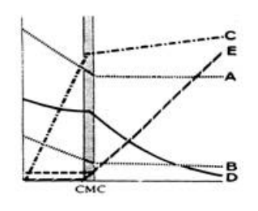

開卷有益 ／
藥師 ／ 藥劑學與生物藥劑學 ／ 102 年第 2 次102 年第 2 次藥師藥劑學與生物藥劑學試題與答案
這一頁是民國 102 年第 2 次藥師藥劑學與生物藥劑學的整份歷屆試題，共 80 題，題目與標準答案出自考選部「國家考試試題及測驗式試題答案」開放資料，其中 75 題附有詳解。以下逐題列出題幹、選項與答案；要計時作答或記錄成績，請用線上練習。
考選部原始場次代碼：102100
線上作答這一科 →
全部 80 題
第 1 題
請問何謂藥品的架儲期（shelf life）？
（A） 藥品藥效剩下出廠時藥效的90%所需時間（B） 藥品藥效剩下出廠時藥效的80%所需時間（C） 藥品藥效剩下出廠時藥效的70%所需時間（D） 藥品藥效剩下出廠時藥效的60%所需時間答案：（A）
詳解與考點 正解：藥品架儲期以 t90 為判準，意指在規定儲存條件下，藥品效價或有效成分剩至原始量 90% 所需的時間。因此（A）所述 90% 正確，故選 A。
B：（B）80% 對應的是 t80，不是藥劑學中架儲期的標準 t90 定義。
C：（C）70% 已低於架儲期所採用的效價門檻；將 t70 當成 shelf life 會把可用期限延得過長。
D：（D）60% 同樣不是架儲期的定義，且已代表較大的效價損失。
本題考點：架儲期（shelf life）——藥品安定性題若問 shelf life，直接連結 t90；安定性動力學（stability kinetics）——先辨認題目要的是效價剩餘比例所對應的時間，再代入適用的降解式。
第 2 題
依藥典在溶液劑濃度之表示法中，電解質化學活性量的單位應以下列何種方式來表示最適當？
（A） % w/v（B） % v/v（C） ppm（D） mEq答案：（D）
詳解與考點 正解：電解質的化學活性量需同時反映離子所帶電荷，最適合用當量表示；（D）mEq 是 milliequivalent，可將價數納入量的表示，因此適用於電解質，故選 D。
A：（A）% w/v 表示每一定體積溶液中所含溶質的重量，只有質量濃度資訊，未表達離子電荷。
B：（B）% v/v 用於液體成分的體積比例，與電解質的當量或電荷數無關。
C：（C）ppm 是極低濃度的比例表示法，仍不會區分一價與二價等不同離子所提供的化學活性量。
本題考點：毫當量（milliequivalent, mEq）——電解質題要納入價數時使用 mEq，而不是只看重量或體積；濃度表示法（concentration expressions）——% w/v、% v/v、ppm 分別表質量／體積或比例，不能取代當量概念。
第 3 題
在眼用溶液中加入甲基纖維素（methylcellulose）之主要用途為何？
（A） 保藏劑（preservative）（B） 抗氧化劑（antioxidant）（C） 增稠劑（thickening agent）（D） 助溶劑（solubilizing agent）答案：（C）
詳解與考點 正解：眼用溶液加入 methylcellulose 的關鍵是提高溶液黏度。（C）增稠後可延長藥液在眼表的停留時間，增加接觸機會，這正是其主要用途，故選 C。
A：（A）保藏劑的任務是抑制微生物生長，methylcellulose 不以抗微生物活性作為主要功能。
B：（B）抗氧化劑用來抑制藥物或賦形劑的氧化降解；methylcellulose 的作用不是提供還原或清除氧化物的能力。
D：（D）助溶劑用來提高難溶性成分的溶解度；methylcellulose 在本題主要改變的是流變性與滯留時間，而非溶解度。
本題考點：眼用黏度調整劑（ophthalmic viscosity enhancer）——需要延長眼表停留時間時，選擇能提高黏度的高分子；methylcellulose——在眼用溶液中先連結增稠與滯留，不要誤判為保藏、抗氧化或助溶功能。
第 4 題
藥典中煤餾油酚肥皂溶液所含之肥皂具有下列何種作用？
（A） 增加溶液之表面張力（B） 增加煤餾油酚之催化作用（C） 增加煤餾油酚之殺菌作用（D） 作為界面活性劑增加煤餾油酚之溶解度答案：（D）
詳解與考點 正解：煤餾油酚肥皂溶液中，肥皂的製劑角色是界面活性劑。（D）肥皂可降低界面張力並形成有助增溶的聚集結構，使煤餾油酚較能分散、溶解於水相，故選 D。
A：（A）界面活性劑的作用方向是降低而非增加表面張力；若表面張力升高，反而不利於潤濕與分散。
B：（B）肥皂不是用來催化煤餾油酚反應，配方中的主要任務是改善物理分散與溶解。
C：（C）肥皂可能影響製劑的接觸或潤濕表現，但本題問的是其在煤餾油酚肥皂溶液中的主要作用；關鍵是增溶，不是直接增加煤餾油酚的殺菌作用。
本題考點：界面活性劑（surfactant）——遇到難溶性油性成分時，先判斷是否靠降低界面張力改善分散；膠束增溶（micellar solubilization）——界面活性劑形成聚集結構後可提高疏水性成分在水相中的表觀溶解度。
第 5 題
以振搖法（2）（alternate solution method）製備芳香水劑時，可用下列何者取代滑石粉，而得 微黃色之透明溶液？
（A） 碳酸鈣（B） 碳酸鎂（C） 磷酸鈣（D） 磷酸鎂答案：（C）
詳解與考點 正解：振搖法（2）製備芳香水劑時，替代滑石粉的材料必須是水不溶、化學上惰性的細粉，能在振搖時把揮發油分散並吸附過量油分，靜置濾過後又可完全被濾除。（C）磷酸鈣即符合此條件，讓揮發性芳香成分經振搖、靜置與濾過後得到題述的微黃色透明水相，故選 C。
A：（A）碳酸鈣雖同為不溶性粉末，但碳酸鹽會使水相偏鹼，對芳香油中的酚、酯類成分不利，濾過後難以得到題述的透明外觀，因此不是此振搖法中可與滑石粉互換的材料；同為粉末不代表製劑功能相同。
B：（B）碳酸鎂與（A）同屬鹼性碳酸鹽，同樣會使水相偏鹼，分散與濾過後的成品外觀不符題述，故不是本法指定的替代材料。分辨關鍵在製劑處方的實際分散與濾過結果，不在於名稱中同有「碳酸」。
D：（D）磷酸鎂與磷酸鈣同屬磷酸鹽，仍不能據此互換；陽離子不同會使材料的溶解度、粉體性質與吸附分散行為不同，濾過後所得水相亦不符題述外觀，題目所述成品對應磷酸鈣。
本題考點：芳香水劑（aromatic waters）——製備時的目標是使揮發性芳香成分形成澄清水性製劑；振搖法（alternate solution method）——替代輔料須同時符合分散、濾過與成品外觀，不能只依化學名稱相似推論。
第 6 題
下列對於「芳香水劑」特性之敘述，何者較不適當？
（A） 屬水溶液之製劑（B） 通常含揮發性成分（C） 芳香成分通常呈飽和狀態（D） 樟腦水不宜使用於眼用製劑答案：（D）
詳解與考點 正解：芳香水劑是揮發性芳香物質的飽和水溶液，題目要找的是不適當的描述。（D）將樟腦水一概說成不宜用於眼用製劑並不正確；樟腦水可作為眼用製劑的例子，實際製備時則另須符合眼用製劑的品質要求，故選 D。
A：（A）芳香水劑的連續相為水，屬水溶液製劑，故敘述正確而非答案。
B：（B）其芳香來源通常為揮發性成分，這正是芳香水劑的基本特徵，故敘述正確。
C：（C）芳香成分通常以近飽和狀態存在於水中；若濃度明顯超過溶解度，反而容易析出或混濁，故敘述正確。
本題考點：芳香水劑（aromatic waters）——先辨認為含揮發性芳香成分的飽和水溶液；眼用製劑（ophthalmic preparations）——某成分可用於眼用不代表免除無菌與其他品質要求，判斷時不可把兩件事混為一談。
第 7 題
牛頓性液體以旋轉圓柱黏度計測量黏稠度，其黏滯係數受下列那一項因素影響？
（A） 切應力（B） 溫度（C） 量測時間（D） 圓柱旋轉速度答案：（B）
詳解與考點 正解：牛頓性液體在固定組成下滿足 τ = η·γ̇，黏滯係數 η 不隨切應力或剪切速率改變；但溫度改變分子運動與內部阻力，因此（B）溫度會影響其黏滯係數，故選 B。
A：（A）對牛頓性液體而言，切應力與剪切速率成正比，改變切應力不會使 η 本身改變。
C：（C）在溫度與組成維持固定時，量測時間不是牛頓性液體黏滯係數的決定因子。
D：（D）圓柱旋轉速度會改變施加的剪切速率，但牛頓性液體的 η 不因剪切速率而改變；這正是它和非牛頓性液體的差異。
本題考點：牛頓性流動（Newtonian flow）——固定溫度下，黏度不隨切應力或剪切速率改變；黏度與溫度（viscosity-temperature relationship）——比較不同溫度的量測值時，先判定溫度是否為造成黏度改變的變因。
第 8 題
下列有關金數（gold number）之敘述，何者正確？
（A） 添加一物質防止金膠變成紅色（B） 添加一物質防止金膠變成藍色（C） 添加一相反電荷離子防止金膠變成黑色（D） 添加一相反電荷離子防止金膠變成黃色答案：（B）
詳解與考點 正解：金數用來表示保護性膠體防止金膠受電解質凝集的能力。穩定的金膠呈紅色，凝集後會轉為藍色或紫藍色；（B）所述「添加一物質防止金膠變成藍色」符合這個判準，故選 B。
A：（A）紅色是穩定金膠原本的顏色，金數不是要防止它變紅，而是防止電解質誘發的藍色凝集變化。
C：（C）相反電荷離子會降低粒子間的靜電排斥而促進凝集，並非金數中由保護性膠體提供的防護作用。
D：（D）相反電荷離子同樣不是用來防止顏色改變的保護性物質；金數考的是親水性保護膠體的抗凝集能力。
本題考點：金數（gold number）——判斷重點是保護性膠體防止金膠因電解質而由紅轉藍的能力；保護性膠體（protective colloid）——親水膠體吸附於疏水膠體表面後，可降低電解質造成凝集的機會。
第 9 題
10%葡萄糖溶液之流動性質是屬於下列何者？
（A） Dilatant flow（B） Newtonian flow（C） Plastic flow（D） Pseudoplastic flow答案：（B）
詳解與考點 正解：10% 葡萄糖溶液為真正溶液，沒有懸浮粒子或高分子網絡所造成的結構性流變變化；在固定溫度下，切應力與剪切速率成正比，因此屬（B）Newtonian flow，故選 B。
A：（A）Dilatant flow 會隨剪切速率上升而增稠，較常見於高濃度懸浮系統，和稀葡萄糖真溶液不同。
C：（C）Plastic flow 需先克服 yield value 才開始流動，通常涉及具有內部結構的分散系統；10% 葡萄糖溶液沒有此門檻。
D：（D）Pseudoplastic flow 會隨剪切速率上升而變稀，常見於高分子溶液或結構性分散系統，不符合本題的簡單真溶液。
本題考點：牛頓性流動（Newtonian flow）——真正溶液在固定溫度下通常呈切應力與剪切速率線性關係；非牛頓性流動（non-Newtonian flow）——先找是否有粒子、高分子鏈或屈服值等結構性來源，再判讀 dilatant、plastic、pseudoplastic。
第 10 題
下列何者增加親水性膠體（colloidal）粒子之安定性？
（A） 增加粒徑大小（B） 增加連續相黏度（C） 增加粒子密度（D） 增加重力答案：（B）
詳解與考點 正解：親水性膠體的物理安定性可由沉降速度判斷。依 Stokes' law，沉降速度與連續相黏度 η 成反比；提高（B）連續相黏度會減慢粒子移動與沉降，因此增加安定性，故選 B。
A：（A）粒徑變大會使沉降速度增加，反而更容易造成分層或沉積。
C：（C）在連續相密度不變時，粒子密度增加會擴大粒子與介質的密度差，增加沉降驅動力，並非安定化。
D：（D）重力是沉降的驅動因素之一，增加重力會使粒子更快移動，不會提高膠體安定性。
本題考點：Stokes' law——判斷沉降時看粒徑平方、密度差、重力與黏度四項方向；懸浮系統安定性（suspension stability）——想降低沉降速度時，提高連續相黏度是直接的處方手段。
第 11 題
以HLB為8（甲）和12（乙）之乳化劑，來製備20 mL HLB= 9.0之乳化劑，其二者（甲／乙）之 比例為何？
（A） 3：1（B） 1：3（C） 4：1（D） 1：4答案：（A）
詳解與考點 正解：HLB 混合題須用加權平均。設甲為 x mL、乙為 y mL，總量為 x + y = 20 mL；目標 HLB 為 9.0，所以 8x + 12y = 9.0 × 20 = 180。代入 x = 20 - y，得 8（20 - y） + 12y = 180，即 160 + 4y = 180，y = 5 mL、x = 15 mL。因此甲／乙 = 15/5 = 3/1，即 3:1，故選 A。
B：（B）甲／乙為 1:3 時，加權 HLB = （8 × 1 + 12 × 3）/4 = 11，乙的比例過高，不能得到 9.0。
C：（C）甲／乙為 4:1 時，加權 HLB = （8 × 4 + 12 × 1）/5 = 8.8，雖接近 9.0，仍不是題目指定的目標值。
D：（D）甲／乙為 1:4 時，加權 HLB = （8 × 1 + 12 × 4）/5 = 11.2，更偏向高 HLB 的乙，與目標不符。
本題考點：HLB 加權平均（hydrophilic-lipophilic balance weighted average）——混合兩種乳化劑時，以各自 HLB 乘用量後除總量；配方比例（formulation ratio）——先解出各成分的量，再化成最簡比例，避免只憑目標值較接近哪一端猜答。
第 12 題
在一具負電荷金溶媒系統下，添加相反電荷離子時，會造成下列何種現象？
（A） 溶解度增加（B） 顏色變紅（C） 粒子凝集（D） 正的Zeta potential變大答案：（C）
詳解與考點 正解：負電荷金溶膠的安定性仰賴粒子表面的負電荷與彼此靜電排斥。加入相反電荷離子後，雙電層被壓縮、Zeta potential 的絕對值下降，排斥力不足便使粒子靠近並（C）凝集，故選 C。
A：（A）此處改變的是膠體粒子的電荷屏蔽與相互作用，不是溶質分子在溶媒中的溶解度。
B：（B）金溶膠的顏色變化是凝集後的光學表現之一，但題幹所問的直接現象是粒子凝集；穩定金溶膠原本即呈紅色。
D：（D）相反電荷離子會使原本負的 Zeta potential 往零靠近，並非使正的 Zeta potential 變大；判斷要看電位絕對值與排斥力是否下降。
本題考點：Zeta potential——帶電膠體加入反離子後，若電位絕對值下降，粒子間靜電排斥便會減弱；膠體凝集（colloidal aggregation）——當排斥力不足以克服吸引力時，優先預測粒子凝集而非溶解度增加。
第 13 題
以比重瓶內裝汞，可測得多孔性質粒之密度為何？
（A） Bulk density（B） Granule density（C） Total density（D） True density答案：（B）
詳解與考點 正解：汞不會潤濕或進入多孔質粒的內部孔隙；以比重瓶內汞的置換量取得的是單一質粒所佔的外觀體積，已排除質粒間空隙但仍保留質粒內孔隙，因此量得的是 granule density，故選 B。
A：bulk density 的分母是鬆裝粉體的堆積體積，會納入質粒與質粒之間的空隙；比重瓶中的汞置換法不保留這些堆積空隙。
C：若以總堆積體積作為分母，概念會落在包含質粒間空隙的密度範圍；本法測的是個別質粒所排開的體積，而非整批粉體的總堆積體積。
D：true density 要排除質粒內外的所有孔隙，須以能進入開放孔隙的測定介質取得固體本身體積；汞對多孔質粒不具此特性。
本題考點：質粒密度（granule density）——用不進入內部孔隙的汞測量質粒外觀體積時，排除的是質粒間空隙；堆積密度（bulk density）——以鬆裝粉體的總堆積體積為分母，會納入粒子間空隙；真密度（true density）——分母只計固體材料本身體積，不納入任何孔隙。
第 14 題
下列對明膠作為乳化劑之敘述，何者正確？
（A） 屬於單分子膜類型（monomolecular type）（B） 用於w/o型乳劑（C） 可大量降低界面張力（D） 可在液滴表面形成堅硬的膜（rigid film）答案：（D）
詳解與考點 正解：明膠是親水性高分子膠體乳化劑，靠吸附於油水界面形成具機械強度的多分子保護膜；這種膜可抵抗液滴聚結，符合 rigid film 的描述，故選 D。
A：單分子膜類型是小分子界面活性劑在界面定向排列的特徵；明膠屬多分子膜類型（multimolecular type），不是單分子膜。
B：明膠親水性高，較適合穩定 O/W 型乳劑；W/O 型通常需要較親油性的乳化劑。
C：明膠的主要穩定機制是形成強韌界面膜，而不是像小分子界面活性劑那樣大量降低界面張力。
本題考點：多分子膜乳化劑（multimolecular film emulsifier）——高分子膠體靠界面吸附形成保護膜來防止聚結；親水親油平衡（hydrophilic-lipophilic balance）——乳化劑偏親水時優先穩定 O/W，偏親油時才傾向 W/O；界面張力降低（interfacial tension reduction）——這是小分子界面活性劑的重要作用，不是明膠的主要判準。
第 15 題
活性碳具有解毒的作用，其作用機制為何？
（A） 加速藥物的代謝（B） 對藥物有吸附作用（C） 刺激分泌酵素來分解藥物（D） 在胃腸道成保護膜答案：（B）
詳解與考點 正解：活性碳具有極大的比表面積與多孔結構，可在胃腸道中把許多藥物分子吸附在表面，減少其可被吸收的游離量，故選 B。
A：活性碳的效果發生在腸胃道腔內，不是進入體內後誘導或加速藥物代謝。
C：活性碳不是酵素，也不以刺激消化液或其他酵素分解藥物作為解毒機制。
D：在胃腸道形成保護膜是某些黏膜保護劑的概念；活性碳是以表面吸附固定藥物，而非覆蓋黏膜。
本題考點：活性碳吸附（activated charcoal adsorption）——中毒處置時看其能否在腸胃道結合藥物並降低吸收；比表面積（specific surface area）——多孔結構提供大量吸附位置，決定活性碳的吸附能力；吸附與代謝（adsorption versus metabolism）——前者是腸道內的物理結合，後者是體內酵素轉化，位置與機制不同。
第 16 題
Salicylic acid與下列何種界面活性劑併用會產生配伍禁忌？
（A） Benzalkonium chloride（B） Sodium lauryl sulfate（C） Tween 20（D） Triethanolamine dodecyl sulfate答案：（A）
詳解與考點 正解：Salicylic acid 在可電離條件下可形成 salicylate，與陽離子性季銨鹽界面活性劑 Benzalkonium chloride 併用時容易發生離子交互作用而造成配伍不穩定，因此應避免此組合，故選 A。
B：Sodium lauryl sulfate 為陰離子性界面活性劑，沒有與 salicylate 形成陽陰離子對的關係，並非本題所問的典型配伍禁忌。
C：Tween 20 為非離子性界面活性劑，不會因帶有相反電荷而與 salicylate 產生此類離子配伍問題。
D：Triethanolamine dodecyl sulfate 為陰離子性界面活性劑；與弱酸性藥物的組合不具 Benzalkonium chloride 那種陽離子性季銨鹽的主要衝突。
本題考點：離子性配伍禁忌（ionic incompatibility）——處方中同時有可電離藥物與帶相反電荷的界面活性劑時，先判斷是否可能形成離子對、沉澱或使活性下降；季銨鹽界面活性劑（quaternary ammonium surfactant）——其陽離子性是與陰離子性成分相容性不佳的判別線索；非離子性界面活性劑（nonionic surfactant）——不以電荷配對為主要交互作用來源。
第 17 題
製備懸液劑時，可添加下列何物質來降低分散介質之表面張力，使質粒易於分散？
（A） 凝絮劑（B） 助懸劑（C） 濕潤劑（D） 稠化劑答案：（C）
詳解與考點 正解：製備懸液劑時，濕潤劑會降低分散介質的表面張力與固液界面的接觸角，使液體較易取代附著於質粒表面的空氣，疏水性質粒因而能均勻分散，故選 C。
A：凝絮劑的用途是讓質粒形成鬆散凝絮，降低緊密沉降與結塊風險；它不是用來改善初始潤濕。
B：助懸劑藉由提高介質黏度或形成結構化網絡減慢沉降，作用在分散後的物理安定性，而非降低表面張力。
D：稠化劑同樣以增加黏度為主，可幫助減少沉降，但不能取代濕潤劑對固液界面的作用。
本題考點：濕潤劑（wetting agent）——疏水質粒難以入水時，先用降低表面張力與接觸角的成分改善潤濕；凝絮（flocculation）——用於控制沉降物的鬆散程度，不是讓粉末開始分散；助懸作用（suspending action）——以黏度或結構化介質延緩沉降，應與潤濕步驟分開判斷。
第 18 題
下圖為一界面活性劑影響溶液五種特性，下列描述曲線何者正確 ？

（A） 曲線A為滲透壓變化（B） 曲線C為導電性變化（C） 曲線D為界面張力變化（D） 曲線E為溶解度變化答案：（D）
詳解與考點 正解：這張圖描述界面活性劑濃度通過 CMC（critical micelle concentration）前後，幾種物理性質的變化趨勢。CMC 之前，溶液中幾乎沒有微胞可供包覆水不溶性物質，難溶物的溶解度維持在很低的水準；一旦濃度超過 CMC、微胞開始大量形成，難溶物便能被微胞的疏水核心增溶，溶解度隨濃度上升而明顯增加。圖中曲線 E 正是在 CMC 之前貼近底部、跨過 CMC 後才轉為持續上升的走勢，與溶解度這種「先平後升」的行為吻合，故選 D。
A：曲線 A 在 CMC 之後轉為平緩、不再持續上升，滲透壓這種依數性質即使在微胞形成後仍會隨濃度緩慢增加（微胞本身也貢獻滲透壓，只是效率降低），走勢應是「斜率變小但持續上升」而非趨於水平，與曲線 A 的表現不完全相符。
B：導電性（適用於離子性界面活性劑）在 CMC 後同樣是斜率降低但持續上升，因為游離的界面活性劑離子在 CMC 後轉為微胞、對導電度的貢獻效率下降；曲線 C 在 CMC 後仍陡峭上升、未見明顯轉折，與導電度應有的斜率轉折不吻合。
C：界面張力應是隨濃度增加而持續下降、在 CMC 附近趨於平緩並維持低值的單調遞減曲線；曲線 D 在圖中的走勢並非這種持續下降後打平的形狀，故不是界面張力。
本題考點：CMC 前後物理性質的轉折型態（properties across the CMC）——界面張力單調下降後打平、滲透壓與導電度在 CMC 後斜率變小但仍緩升、濁度與溶解度則是 CMC 前貼近零、CMC 後才明顯上升，判準是看轉折後的走勢方向而非只看數值高低。
第 19 題
有關ampicillin for oral suspension之乾燥藥品使用方法的敘述，下列何者正確？
（A） 不需添加媒液（B） 使用時加適當媒液形成懸液劑（C） 藥品加適當媒液完全溶解才可使用（D） 藥品加適當媒液靜置只取上清液使用答案：（B）
詳解與考點 正解：ampicillin for oral suspension 是供調製的乾燥製劑，使用前須加入適當媒液並使粉末均勻分散，形成可量取的懸液劑後再服用，故選 B。
A：乾燥粉末尚未形成可準確給藥的液體劑型，不能不加媒液直接視為可使用的口服懸液劑。
C：懸液劑的藥物不必完全溶解；要求完全溶解會把懸液劑誤判為溶液劑。
D：有效成分可分布於沉降的質粒中，只取上清液會使實際劑量失真；正確作法是先使全體內容物重新均勻分散。
本題考點：乾燥口服懸液劑（dry powder for oral suspension）——先以適當媒液調製並混勻，才得到可量取的給藥劑型；懸液劑（suspension）——藥物以固體微粒分散於液體中，不以完全溶解為條件；重新分散（redispersion）——有沉降時應恢復均勻性後量取，避免劑量偏差。
第 20 題 待校
當水的表面張力是72 dyne/cm，對臨界表面張力是39 dyne/cm的固體形成的接觸角為86度，在 水中添加界面活性劑，下列何種性質不會改變？
（A） 水的表面張力（B） 水與固體的界面張力（C） 固體的臨界表面張力（D） 水與固體的接觸角答案：（C）
第 21 題
牛頓性液體（Newtonian liquid）之黏滯性與下列何者有關？ ①組成 ②溫度 ③切應力 ④切 變速率 ⑤測量時間
（A） ①②（B） ①③（C） ②④（D） ②⑤答案：（A）
詳解與考點 正解：Newtonian liquid 的黏度由液體組成與溫度決定。其切應力與切變速率呈線性關係，η = τ/γ̇ 為常數，因此不隨切應力、切變速率或測量時間而改變；符合的是①②，故選 A。
B：③切應力雖會隨流動條件改變，但 Newtonian liquid 的黏度不因切應力大小而改變。
C：④切變速率是非牛頓性流體可能影響表觀黏度的變數，不是 Newtonian liquid 黏度的決定因子。
D：⑤測量時間與觸變性或反觸變性系統有關；Newtonian liquid 在相同組成與溫度下不具有此時間依賴性。
本題考點：牛頓性流體（Newtonian liquid）——判斷式是黏度在固定組成與溫度下不隨剪切條件改變；黏度（viscosity）——溫度與組成改變會改變分子間作用與流動阻力；時間依賴流動（time-dependent flow）——觸變性屬非牛頓性行為，不能套用到牛頓性液體。
第 22 題
下列關於aluminum hydroxide制酸劑之敘述，何者錯誤？
（A） 液態劑型比固態錠劑作用時間較快（B） 固態錠劑可做成咀嚼錠（C） 固態非咀嚼錠須在短時間內崩散（D） 服用此類藥物，希望胃排空愈快愈好答案：（D）
詳解與考點 正解：制酸劑必須在胃內與胃酸充分接觸才能發揮中和作用；胃排空加快會縮短停留與反應時間，所以希望胃排空愈快愈好的敘述方向相反，故選 D。
A：液態劑型已使制酸成分分散，與胃酸接觸的有效表面較大，通常比固態錠劑更快起效。
B：固態錠劑可製成咀嚼錠，咀嚼能先行破碎錠劑並增加接觸面積，有利於較快中和胃酸。
C：不能咀嚼的固態錠劑若未及時崩散，反應表面積有限而難以迅速發揮作用，因此需在短時間內崩散。
本題考點：制酸劑作用條件（antacid action）——判斷效力時看與胃酸的接觸面積及胃內停留時間；劑型起效速度（dosage-form onset）——液體與咀嚼後的細小粒子通常比完整固體更快提供反應表面；胃排空（gastric emptying）——對需在胃內作用的藥物，排空過快會縮短作用時間。
第 23 題
下列何者為金數（gold number）的正確單位？
（A） μg（B） mg（C） mg/cm3（D） g答案：（B）
詳解與考點 正解：gold number 定義為防止標準金溶膠被電解質凝聚所需的最小保護膠體質量，慣用質量單位為 mg，故選 B。
A：μg 雖也是質量單位，但 gold number 的定義值以 mg 表示，不能任意改以較小的單位作為標準答案。
C：mg/cm3 是濃度單位；gold number 比較的是達保護效果所需的質量，而不是單位體積中的含量。
D：g 是質量單位但尺度不符 gold number 的慣用定義，將 mg 改成 g 會使數值表達失去標準性。
本題考點：金數（gold number）——比較保護膠體能力時，以防止金溶膠凝聚所需的最小質量判斷，數值愈小代表保護能力愈強；保護膠體（protective colloid）——吸附於疏液性膠體粒子表面後，可降低電解質造成凝聚的傾向；質量與濃度（mass versus concentration）——有體積分母才是濃度，只有所需量時應先判斷為質量單位。
第 24 題
下列何者之臨界微膠體濃度值最高？
（A） n-C10H21N(CH3)3Br（B） n-C12H25N(CH3)3Br（C） n-C14H29N(CH3)3Br（D） n-C14H29N(CH3)3Cl答案：（A）
詳解與考點 正解：同系陽離子界面活性劑的烷基鏈愈短，疏水驅動聚集的力量愈小、單體水溶性愈高，必須累積到較高濃度才形成微膠體。n-C10H21N(CH3)3Br 的碳鏈最短，因此臨界微膠體濃度最高，故選 A。
B：n-C12H25N(CH3)3Br 的烷基鏈比（A）長兩個碳，疏水效應較強，較容易聚集，所以 CMC 較低。
C：n-C14H29N(CH3)3Br 的烷基鏈更長，形成微膠體的驅動力較大，不會有最高的 CMC。
D：n-C14H29N(CH3)3Cl 與（C）同為 C14 烷基鏈；反離子可影響 CMC，但不足以扭轉相對於 C10 短鏈所造成的主要趨勢。
本題考點：臨界微膠體濃度（critical micelle concentration，CMC）——同系界面活性劑比較時，疏水烷基鏈愈短通常 CMC 愈高；疏水效應（hydrophobic effect）——烷基鏈拉長會增加聚集驅動力，使微膠體可在較低濃度形成；反離子效應（counterion effect）——反離子會微調離子性界面活性劑的 CMC，但先以烷基鏈長度判斷主趨勢。
第 25 題
下列何者之物理化學分類不屬於吸收性基劑（absorption base）？
（A） 消散乳霜（vanishing cream）（B） 水基劑（aquabase）（C） 羊毛脂（lanolin）（D） 冷霜（cold cream）答案：（A）
詳解與考點 正解：消散乳霜（vanishing cream）通常為 O/W 型乳霜，可由水洗去，歸於 water-removable base；它不具吸收外加水分作為主要用途的吸收性基劑性質，故選 A。
B：Aquabase 在本題所採的物理化學分類中可吸收水分並形成或維持 W/O 類系統，因此歸在吸收性基劑。
C：羊毛脂（lanolin）可吸收相當量的水並形成 W/O 系統，是典型的吸收性基劑。
D：冷霜（cold cream）通常為 W/O 型乳霜，可再吸收水分，故在此分類中屬吸收性基劑。
本題考點：吸收性基劑（absorption base）——判斷時看無水油性基劑或 W/O 系統是否能吸收外加水分；可水洗基劑（water-removable base）——O/W 乳霜以水為外相，容易洗去，不等同吸收性基劑；W/O 乳劑（water-in-oil emulsion）——水為內相、油為外相，是辨識冷霜與羊毛脂類基劑的重要線索。
第 26 題
下列皮膚各層，何者之主要功能為防止水分的散失？
（A） 角質層（stratum corneum）（B） 顆粒層（stratum granulosum）（C） 透明層（stratum lucidum）（D） 棘狀層（stratum spinosum）答案：（A）
詳解與考點 正解：角質層（stratum corneum）由角質細胞與細胞間脂質層構成皮膚最外側的通透性屏障，主要負責限制經皮水分散失，故選 A。
B：顆粒層（stratum granulosum）參與角化與屏障形成前的分化過程，但成熟後直接阻擋水分散失的主要層次是角質層。
C：透明層（stratum lucidum）只在厚皮膚較明顯，並非全身皮膚防止水分散失的主要屏障。
D：棘狀層（stratum spinosum）提供表皮細胞間連結與結構支持，並不主責水分通透性的限制。
本題考點：角質層屏障（stratum corneum barrier）——判斷經皮水分散失時，先找最外層角質細胞與細胞間脂質結構；經皮水分散失（transepidermal water loss）——屏障受損時水分散失增加，是外用製劑保濕與修復的主要目標；表皮分層（epidermal layers）——各層都有分化或支持功能，但主要通透性屏障不可誤認為較深層。
第 27 題
下列基劑何者最適合用來製備對水不安定的tetracycline 軟膏？
（A） 單軟膏（B） 聚乙二醇軟膏（C） 水油型軟膏基劑（D） 油水型軟膏基劑答案：（A）
詳解與考點 正解：tetracycline 對水不安定時，優先選用不含水的油脂性單軟膏（simple ointment），可避免將藥物直接置於含水相中而促進分解，故選 A。
B：聚乙二醇軟膏雖可配成無水系統，但屬水溶性且具吸濕性的基劑；對需優先避水的藥物，不如油脂性單軟膏適合。
C：水油型軟膏基劑含有水相，藥物仍可能接觸分散的水分，不能滿足以避水為首要條件的選擇。
D：油水型軟膏基劑以水為外相，藥物更容易暴露於水性環境，對水不安定藥物尤其不利。
本題考點：水解安定性（hydrolytic stability）——藥物對水不安定時，先選無水且疏水的基劑以減少水接觸；油脂性基劑（oleaginous base）——適合保護需避水藥物，但不易以水洗去；乳化型軟膏基劑（emulsion ointment base）——無論 W/O 或 O/W 都含水相，選擇前須先判斷藥物是否耐水。
第 28 題
Betamethasone valerate ointment用於皮膚使用時，藥典要求應進行下列何種菌的微生物限量試 驗（microbial limits）？
（A） 大腸桿菌（B） 金黃色葡萄球菌（C） 酵母菌（D） 黴菌答案：（B）
詳解與考點 正解：Betamethasone valerate ointment 為皮膚用非無菌製劑，微生物限量試驗會針對皮膚感染風險的重要指定菌進行適格性檢查；金黃色葡萄球菌（Staphylococcus aureus）是此類製劑的指定菌，故選 B。
A：大腸桿菌（Escherichia coli）的指定試驗較著重於與腸道相關的非無菌製劑，並非本題皮膚用軟膏的主要指定菌。
C：酵母菌是總酵母菌及黴菌計數的組成類別，與針對指定致病菌進行缺席試驗的概念不同。
D：黴菌同樣屬總酵母菌及黴菌計數的範圍，不能取代皮膚用製劑對指定細菌的檢查。
本題考點：微生物限量試驗（microbial limits）——非無菌製劑須依給藥途徑判斷總數限度與指定菌檢查；指定菌（specified microorganism）——皮膚用製劑優先辨識與皮膚感染相關的 Staphylococcus aureus；總酵母菌及黴菌計數（total yeasts and molds count）——這是數量限度概念，與特定致病菌的缺席試驗不同。
第 29 題
以熔合法製備含可可脂基劑之栓劑時，下列敘述何者較適當？
（A） 將藥物及基劑加熱至澄明後，倒入栓劑模中冷卻即可（B） 就栓劑模之材質比較，通常鋁製模子優於鎳-銅合金製模子（C） 冷卻過程因可可脂之體積會收縮，故充填前栓劑模不需事先塗抹潤滑劑（D） 藥物若會導致可可脂之熔點下降時，通常可添加少量硬脂酸鋁（aluminum stearate）予以改善答案：（D）
詳解與考點 正解：藥物使可可脂熔點下降時，處置方向是提高基劑的稠度與硬度。加入少量 aluminum stearate（硬脂酸鋁）可提高可可脂基劑的稠度與硬度，減少栓劑因熔點下降而過度軟化，仍能維持成形與脫模，故選 D。
A：可可脂具有多晶型性，熔合法只應以足夠熱度使基劑熔化；加熱至澄明容易表示過度加熱，可能改變晶型與凝固後熔點。
B：模具材質的選擇須同時考慮導熱性、耐久性與脫模性，不能概括認定鋁製模子通常優於鎳-銅合金製模子。
C：本題要選較適當的處置。可可脂冷卻收縮確實有助脫模，但那只是操作上的附帶現象，並非題目所問的處置手段；是否需要潤滑劑還取決於模具材質與實際處方，金屬模具或改用其他基劑時仍常需潤滑，因此不能由收縮一項推得所有情況都不必事先塗抹潤滑劑。
本題考點：可可脂（cocoa butter）——熔製時避免過度加熱，以維持適當晶型與熔點；熔點降低修正（melting-point depression correction）——藥物軟化基劑時，可用提高稠度的添加劑改善成品硬度；栓劑脫模（suppository demolding）——基劑冷卻收縮有助脫模，但潤滑需求仍須連同模具與處方判斷。
第 30 題
下列何者不是影響藥物由osmotic pump錠劑釋放之主要因素？
（A） 錠劑之滲透表面積（B） 胃腸道酸鹼度（C） 半透膜之厚度（D） 雷射孔徑之大小答案：（B）
詳解與考點 正解：osmotic pump 錠劑經半透膜吸入水分，核心產生滲透壓後將藥物經釋放孔推出；釋放速率的主要設計因素在膜與孔的物理性質，而不是胃腸道酸鹼度，故選 B。
A：錠劑的滲透表面積會改變可供水分通過半透膜的面積，因此會影響滲透驅動與釋放速率。
C：半透膜愈厚，水分進入核心的阻力愈大，會改變釋放速率，是重要的製劑設計變數。
D：雷射孔徑決定藥物溶液或懸液排出的通道阻力；孔徑設計不當會影響釋放，屬主要因素之一。
本題考點：滲透壓幫浦（osmotic pump）——判斷釋放機制時看水透過半透膜、核心建立滲透壓、藥物由孔口排出的連續過程；半透膜（semipermeable membrane）——表面積與厚度會改變水通量，進而影響釋放；酸鹼度獨立性（pH independence）——此類系統以滲透壓驅動，設計目標是降低胃腸道 pH 對釋放的影響。
第 31 題
同一種藥品，膜衣錠與糖衣錠的最大不同處為何？
（A） 釋放機轉（B） 錠片處方（C） 包衣材質（D） 有效時期答案：（C）
詳解與考點 正解：膜衣錠與糖衣錠都是在錠心外加包衣；前者使用高分子薄膜材料，後者以糖類層層包覆，兩者最根本的差異是包衣材質，故選 C。
A：包衣可被設計成速放、腸溶或其他功能，但膜衣或糖衣的名稱本身不直接決定藥物釋放機轉。
B：兩種包衣都可用於相同或相近的錠心處方，是否採膜衣或糖衣主要取決於包衣技術與材料。
D：有效時期取決於藥物與成品的安定性資料、包裝與儲存條件，不能作為膜衣錠與糖衣錠的最大區別。
本題考點：膜衣錠（film-coated tablet）——以高分子薄膜形成較薄且製程效率高的包衣；糖衣錠（sugar-coated tablet）——以糖類多層包覆，衣層通常較厚；功能性包衣（functional coating）——釋放特性由材料與設計目的決定，不能只憑膜衣或糖衣名稱判斷。
第 32 題
具有下列何種特質的藥物不須製備成腸溶錠？
（A） 會被胃酸液降解者（B） 具有酸性官能基者（C） 具胃黏膜刺激性者（D） 避免被胃部吸收者答案：（B）
詳解與考點 正解：腸溶錠的目的在於保護會被胃酸破壞的藥物、減少胃黏膜刺激，或讓藥物避開胃部而在腸道釋放；僅具有酸性官能基是化學結構特徵，本身不足以構成腸溶包衣的適應理由，故選 B。
A：會被胃酸液降解的藥物需要先避開胃內酸性環境，腸溶包衣可使其到較高 pH 的腸道再釋放。
C：具胃黏膜刺激性的藥物可利用腸溶包衣延後釋放，減少藥物在胃部的直接接觸。
D：若治療或吸收設計要求避免胃部吸收，腸溶包衣可把釋放位置延後至腸道。
本題考點：腸溶包衣（enteric coating）——判斷依據是胃酸安定性、胃黏膜刺激性或目標釋放部位，不是單看官能基名稱；pH 依賴釋放（pH-dependent release）——腸溶材料在胃內保持完整，到腸道較高 pH 才溶解；酸性官能基（acidic functional group）——會影響電離與溶解度，但不自動表示必須腸溶。
第 33 題
下列有關控釋製劑在臨床上之使用何者為正確？
（A） 在使用速放製劑達穩定狀態後可和控釋製劑交替使用（B） 其和速放製劑在穩定狀態時最高血中濃度相同（C） 控釋材質可在腸胃道中逐漸溶解及吸收（D） 不同控釋製劑間因生體可用率可能不同，因此不可任意替換使用答案：（D）
詳解與考點 正解：不同控釋製劑的釋放機制、劑量設計與生體可用率可能不同，即使主成分相同也未必具有相同暴露量與給藥間隔，因此不可任意互相替換，故選 D。
A：速放製劑與控釋製劑的給藥間隔及濃度時間曲線不同；即使速放製劑已達穩定狀態，也不能直接與控釋製劑交替使用。
B：控釋製劑的目的通常是減少濃度波動並降低峰值，與速放製劑在穩定狀態下的最高血中濃度不必相同。
C：被吸收的是已釋出的藥物，不是所有控釋材質；基質可能膨潤、侵蝕或隨糞便排出，不能概括為逐漸溶解及吸收。
本題考點：控釋製劑（controlled-release dosage form）——換藥時須比較釋放曲線、生體可用率與給藥間隔，不能只看主成分；穩定狀態濃度波動（steady-state fluctuation）——控釋設計通常降低峰谷差，故 Cmax 不應假定與速放製劑相同；製劑替換（formulation substitution）——不同劑型可能改變暴露量與療效安全性，應依可替換性資料判斷。
第 34 題
打錠壓力大小所影響的錠片物性中何者最為重要？
（A） 厚度（thickness）（B） 脆度（friability）（C） 硬度（hardness）（D） 徑度（diameter）答案：（C）
詳解與考點 正解：打錠壓力直接決定粉粒間的鍵結程度，因而最重要的受影響物性是（C）硬度（hardness）。壓力增加通常會提高抗壓碎能力；硬度也連動後續搬運時的完整性與崩散、溶離表現，故選 C。
A：（A）厚度（thickness）會隨壓縮程度改變，但它是幾何尺寸指標，並非壓力效果最核心的品質判讀量。
B：（B）脆度（friability）可隨硬度與配方而改善，卻是錠片受摩擦後的重量損失結果；判別打錠壓力時，先看直接量得的硬度較適切。
D：（D）徑度（diameter）主要由模孔與沖頭設計決定，同一套工具下改變壓力不會是其主要控制來源。
本題考點：壓縮力與錠片硬度（compression force and tablet hardness）——評估壓縮是否形成足夠粒間鍵結時，以抗壓碎力為直接指標；錠片幾何尺寸（tablet dimensions）——徑度由工具規格主導，厚度才較會隨壓縮程度改變；脆度（friability）——用來看搬運耐受性，須和硬度及配方一起判讀。
第 35 題
硬度表示壓碎錠片所需要使用的力量，一般理想錠片的最低硬度要求為多少公斤？
（A） 1（B） 2（C） 3（D） 4答案：（D）
詳解與考點 正解：硬度（hardness）是壓碎錠片所需的力，題目問理想錠片的最低要求時採用 4 kg 作為下限；低於此值的錠片較難承受後續包裝與運輸，故選 D。
A、B、C：（A）1 kg、（B）2 kg與（C）3 kg均低於題示的最低硬度要求；三者不是不同單位或不同規格，而是壓碎力不足的數值。
本題考點：錠片硬度（tablet hardness）——以壓碎錠片所需力量判定機械強度，先確認數值是否達製劑規格下限；錠片脆裂風險（tablet breakage risk）——硬度過低時，後續除粉、包裝與運輸較容易造成破損。
第 36 題
關於製備硬膠囊殼所用之「明膠」材料，下列敘述何者較適宜？
（A） 若取自豬之皮革時，通常係將豬皮以細菌發酵水解而得（B） 若取自動物之骨頭時，宜除去大部分之磷酸鈣（C） 通常以豬骨為優先考慮之來源（D） 明膠之粉末宜選用粒徑越細小者越好，因較易溶解答案：（B）
詳解與考點 正解：硬膠囊殼用明膠的來源可為動物皮或骨；骨來源含有大量無機鹽，製備時去除大部分磷酸鈣，才能取得適合製殼的明膠，因此（B）較適宜，故選 B。
A：（A）豬皮來源的明膠通常以酸法前處理膠原蛋白後萃取而得（Type A gelatin），並非以細菌發酵水解取得；其製程重點是從膠原蛋白經適當處理與萃取製得明膠。
C：（C）明膠原料的來源須視品質、供應與製程條件選擇，不能把豬骨說成通常優先考慮的來源。
D：（D）明膠粉末的粒徑需兼顧潤濕、分散與操作性，並非越細小越好；過多細粉反而可能增加飛散與夾帶空氣等製程問題。
本題考點：明膠來源與純化（gelatin sourcing and purification）——骨來源明膠須先降低無機鹽含量，再評估其製殼適用性；原料粒徑與製程性（particle size and processability）——選擇粒徑時同時看溶解、分散與操作風險，不能只用溶解速度排序。
第 37 題
下列何種造粒製程可以一次完成混合、造粒、乾燥的製備可用於打錠的顆粒？
（A） 行星式造粒機（planetary mixer）（B） 快速造粒機（super mixer）（C） 流動床造粒機（fluid bed granulator）（D） 振盪擠壓造粒機（oscillating granulator）答案：（C）
詳解與考點 正解：題幹要求同一製程一次完成混合、造粒與乾燥；（C）流動床造粒機（fluid bed granulator）在氣流中使粉體流動，同時噴液造粒並以熱氣乾燥，符合三項功能，故選 C。
A：（A）行星式造粒機（planetary mixer）可用於混合及濕式造粒，但通常仍需另行乾燥，未能在同一設備完成三個步驟。
B：（B）快速造粒機（super mixer）以高速攪拌完成混合與造粒為主，顆粒乾燥通常是後續的獨立作業。
D：（D）振盪擠壓造粒機（oscillating granulator）主要用於整粒或使物料通過篩網形成較均一顆粒，並非整合混合與乾燥的設備。
本題考點：流動床造粒（fluid bed granulation）——題目同時出現混合、造粒、乾燥時，優先辨認可在流動氣流中整合三者的設備；造粒設備功能（granulation equipment functions）——高速混合、整粒與乾燥各有典型設備，先按製程步驟比對即可排除。
第 38 題
直接壓錠時會發生錠片的頂裂（capping）、分裂（splitting）或層裂（lamination）現象，其主 要原因為何？
（A） 顆粒結晶水低（B） 整體水量不足（C） 顆粒流動不佳（D） 空氣被包埋住答案：（D）
詳解與考點 正解：直接壓錠出現頂裂（capping）、分裂（splitting）或層裂（lamination）時，關鍵是壓縮過程中（D）空氣被包埋住。卸壓後被困空氣膨脹，會把已形成的錠片結構頂開或分層，故選 D。
A：（A）顆粒結晶水低可能影響某些物料的性質，但不是這些壓錠裂解缺陷最主要的共同機轉。
B：（B）整體水量不足可能降低黏結性，卻不能直接解釋卸壓後形成頂裂與層裂的典型現象；分辨關鍵在於被困空氣的膨脹。
C：（C）顆粒流動不佳主要造成模孔充填量不穩與重量偏差，和錠片被頂開、分層的主要原因不同。
本題考點：壓錠空氣包埋（air entrapment）——看到頂裂、分裂或層裂時，先判斷卸壓後的困氣膨脹是否破壞錠片結構；粉體流動性（powder flowability）——流動性不足優先連結充填與重量均一性，不直接等同於層裂。
第 39 題
欲將塊狀樟腦製成固體粉末，下列所述方法中何者較適當？
（A） 在球磨機中以鋼球撞擊研磨之（B） 先將其置於研缽中，隨後加少量酒精以杵研磨，再於開放空間中任其乾燥（C） 以溶劑溶解後，再噴霧乾燥即可（D） 以水溶解後，再行凍晶乾燥答案：（B）
詳解與考點 正解：塊狀樟腦質韌具彈性，直接研磨只會團結成塊而不成粉；（B）先在研缽中加少量酒精以杵研磨，可使其結晶變脆而易碎，研磨後於開放空間任酒精揮散，即得固體粉末，此即介入研磨法（pulverization by intervention），故選 B。
A：（A）球磨機以鋼球長時間撞擊會增加摩擦與熱量，對易揮發的樟腦不利，粉碎過程可能伴隨損失。
C：（C）先溶解再噴霧乾燥需要處理大量溶劑與乾燥熱負荷，對小量塊狀樟腦的粉碎既不直接也不經濟。
D：（D）樟腦不適合以水溶解後再凍晶乾燥；水中溶解性不足，不能形成可供此法處理的適當溶液。
本題考點：易揮發固體的粉碎（comminution of volatile solids）——物料易因研磨熱揮發時，選能降低摩擦熱或短暫潤濕輔助的處理方式；粉碎助劑（pulverization aid）——少量揮發性液體可協助脆化或分散，後續須能容易移除且不傷害主成分。
第 40 題
於實務上，不同固體粉末之混合均勻度，受固體粉末之何因素影響最小？
（A） 粒徑粗細（B） 密度大小（C） 粉粒外型（D） 靜電存在與否答案：（B）
詳解與考點 正解：在題列因素的比較中，（B）密度大小對不同固體粉末混合均勻度的影響相對最小。粒徑、外型與靜電會直接改變粉粒的移動、附著或團聚；單看密度大小的區別，影響通常較不居首位，故選 B。
A：（A）粒徑粗細會影響粒子滲流與分離，小粒徑可能穿過大粒徑間隙而造成偏析，對均勻度很重要。
C：（C）粉粒外型會改變流動性、接觸方式與堆積行為，形狀差異大時混合與偏析行為也會改變。
D：（D）靜電會使粉末互相吸附或黏附設備表面，造成團聚與局部成分不均，不能視為影響很小的因素。
本題考點：粉體混合均勻度（powder blend uniformity）——比較混合因素時，先看是否直接改變粉粒移動、滲流或團聚；粉體偏析（powder segregation）——粒徑與形狀差異常引發分離，靜電則以附著與團聚方式破壞均勻性。
第 41 題
睪丸素（testosterone）製備成速溶錠（rapidly dissolving tablets, RDTs）的主要優點為何？
（A） 口腔酸鹼值有利於溶解（B） 口腔吸收降低首渡效應（C） 崩解成細顆粒有利溶解（D） 口腔酵素水解有利吸收答案：（B）
詳解與考點 正解：睪丸素（testosterone）製成速溶錠（rapidly dissolving tablets, RDTs）的主要價值，在於可經口腔黏膜吸收；（B）此途徑可避開或降低肝臟首渡效應（first-pass effect），提高進入全身循環的機會，故選 B。
A：（A）口腔酸鹼值並非睪丸素使用 RDTs 的主要優勢；判別重點是吸收路徑是否繞開肝臟首渡代謝。
C：（C）崩解成細顆粒確實有利溶出，但這是速溶錠的一般劑型特性，不能說明睪丸素採口腔給藥的主要藥動學利益。
D：（D）口腔酵素對藥物多屬可能的代謝或降解來源，並不會構成有利吸收的主要機轉。
本題考點：口腔黏膜吸收（oromucosal absorption）——藥物由口腔黏膜進入循環時，可降低經門脈先到肝臟的首渡代謝；首渡效應（first-pass effect）——判斷劑型優勢時，先區分藥物是吞服進腸胃道還是由口腔黏膜吸收。
第 42 題
體外規格中何者有最大機會與體內生體可用率建立體內體外相關性（in vivo-in vitro correlation）？
（A） 含量均一度（B） 重量偏差度（C） 錠片崩散度（D） 藥物溶離度答案：（D）
詳解與考點 正解：要與體內生體可用率建立體內體外相關性（in vivo-in vitro correlation），體外試驗必須最能反映藥物釋放速率；（D）藥物溶離度提供隨時間釋出的資訊，最有機會對應吸收與生體可用率，故選 D。
A：（A）含量均一度確認各單位劑量的主藥量是否一致，不能直接描述藥物釋放速度。
B：（B）重量偏差度是製程與劑量一致性的指標，重量相近不代表進入溶液的速率相同。
C：（C）錠片崩散度只記錄錠片是否裂散或所需時間，未量化主藥實際溶出的時間歷程；它可作為篩檢，但相關性通常不如溶離度直接。
本題考點：體內體外相關性（in vivo-in vitro correlation）——要預測體內吸收時，選擇能量化藥物釋放時間歷程的體外資料；溶離度（dissolution）——以濃度或釋放百分率對時間呈現，較能連結劑型釋放與生體可用率。
第 43 題
下列何種賦型劑種類變更對於錠片品質與功效之負面影響最大？
（A） MCC 101改用MCC 102（B） Lactose monohydrate改用lactose anhydrate（C） Sucrose改用mannitol（D） Magnesium stearate改用calcium stearate答案：（D）
詳解與考點 正解：題目比較不同賦型劑變更的風險時，（D）Magnesium stearate 改用 calcium stearate 對錠片品質與功效的負面影響最大。兩者雖同屬金屬皂潤滑劑，金屬離子改變仍會影響潤滑強度、疏水性、壓錠行為及溶離表現，故選 D。
A：（A）MCC 101 與 MCC 102 的粒徑及流動性不同，需調整製程，但仍是同一類微晶纖維素（microcrystalline cellulose）材料，影響通常較可預期。
B：（B）Lactose monohydrate 與 lactose anhydrate 的水合狀態不同，可能改變水分與壓縮性；它們仍是乳糖填料，與更換金屬皂潤滑劑相比，對潤滑膜與釋放的直接衝擊較小。
C：（C）Sucrose 與 mannitol 都可作為水溶性填料，甜味、溶解與壓縮特性並不完全相同；看似差異很大，但題目所比較的最大風險在潤滑劑性質改變。
本題考點：潤滑劑變更（lubricant substitution）——更換金屬皂時，須同時評估壓錠摩擦、硬度與疏水膜對溶離的影響；賦型劑功能性（excipient functionality）——比較替換風險時，先看該成分是否直接控制關鍵製程或藥物釋放。
第 44 題
就「硬膠囊劑之配方」言，下述情況何者不適當？
（A） 主藥含結晶水時，其水分含量應少於3%（B） 固體粉末之配方中，常需有填料、潤滑劑或滑動劑等之加入（C） 主藥為疏水性時，常需有潤濕劑等之加入（D） 固體配方中可加入崩散劑以防止於胃、腸中結塊答案：（A）
詳解與考點 正解：硬膠囊配方中，（A）把主藥含結晶水時的水分含量一概限為少於 3% 並不適當。結晶水與游離水的狀態不同，配方應依水分活性、囊殼相容性與安定性判斷，不能用單一固定門檻取代評估，故選 A。
B：（B）固體粉末配方常加入填料以調整充填量，並以潤滑劑或滑動劑改善充填、流動與製程操作，這是合理的配方設計。
C：（C）主藥為疏水性時，加入潤濕劑可促進液體接觸粉體表面，改善潤濕與後續溶出，敘述適當。
D：（D）固體配方可加入崩散劑，以利膠囊內容物接觸胃腸液後分散並減少結塊，敘述適當。
本題考點：結晶水與游離水（water of crystallization and free water）——評估膠囊配方水分時，先區分水的存在狀態及其對囊殼的實際影響；硬膠囊賦型劑（hard capsule excipients）——填料、滑動劑、潤滑劑、潤濕劑與崩散劑均依粉體與釋放需求選用，不可只按名稱判斷。
第 45 題
錠片劑型的品質與功效會受到處方成分與製程方法變更之影響，試問下列何種變更最不易對錠片 品質產生影響？
（A） 黏合劑用量提高（B） 色素成分的調換（C） 混合機種的變更（D） 整粒篩網的改變答案：（B）
詳解與考點 正解：錠片品質最不容易因（B）色素成分調換而受影響。色素的主要功能是外觀辨識；在相容性與用量均適當的前提下，通常不直接控制錠片強度、含量均一性或釋放行為，故選 B。
A：（A）黏合劑用量提高會直接改變粒間鍵結，可能使硬度、崩散與溶離時間改變，因此不是影響最小的變更。
C：（C）混合機種會改變剪切力、混合效率與粉體分離風險，直接關係到成分均一性與後續壓錠表現。
D：（D）整粒篩網改變會造成顆粒粒徑分布不同，進而影響流動性、模孔充填及壓縮性，對品質具有實質影響。
本題考點：關鍵配方成分（critical formulation components）——黏合劑直接影響錠片結構與釋放時，變更應優先評估；製程參數（process parameters）——混合機種與整粒篩網會改變粉粒分布及均一性，不可視為外觀性變更；色素（colorant）——主要用於外觀識別，與功能性成分的風險層級不同。
第 46 題
關於「硬明膠膠囊殼」之敘述，下列何者較正確？
（A） 製備時若添加有二氧化鈦，則可使囊殼變成無色（B） 「明膠」為其組成之一，通常係源自獸皮、骨頭或玉米（C） 「明膠」於乾燥空氣中安定，但遇潮溼則快速溶解（D） 常態下，囊殼中約含13~16%之水分答案：（D）
詳解與考點 正解：硬明膠膠囊殼在常態下約含 13-16% 水分，這個水分範圍有助於維持囊殼柔韌性，因此（D）正確，故選 D。
A：（A）二氧化鈦用於使囊殼呈白色或不透明，不會使囊殼變成無色。
B：（B）明膠通常源自獸皮或骨等動物性膠原蛋白原料；玉米不是明膠的通常來源。
C：（C）明膠囊殼在乾燥空氣中可能因失水而變脆，遇潮則會吸濕、軟化或變形，不能概括成遇潮即快速溶解。
本題考點：硬明膠膠囊含水量（hard gelatin capsule moisture content）——判斷囊殼物性時，記住適量水分維持柔韌，過乾易脆、過濕易軟；二氧化鈦（titanium dioxide）——在囊殼中用於遮光與不透明外觀，不是無色化成分。
第 47 題
下列有關Fisher subsieve sizer之敘述，何者錯誤？
（A） 可用來測定粉末之表面積（B） 是利用空氣受電離子化之原理（C） 空氣進入樣本前宜恆壓（D） 空氣進入樣本前宜除濕答案：（B）
詳解與考點 正解：Fisher subsieve sizer 以空氣通過粉末層的滲透阻力推估粒徑或比表面積，並不是利用空氣受電離子化的原理，因此（B）錯誤，故選 B。
A：（A）此法可由空氣滲透行為推得粉末的比表面積或相關粒徑資訊，敘述正確。
C：（C）量測時須控制進入樣本前的空氣壓力，才能讓壓降與流量資料可比較，敘述正確。
D：（D）空氣進入樣本前宜除濕，以避免粉末吸濕、結塊或改變孔隙結構而干擾量測，敘述正確。
本題考點：空氣滲透法（air permeability method）——看到 Fisher subsieve sizer 時，將原理連結到固定條件下的空氣流與粉末層阻力，不是電離現象；比表面積（specific surface area）——粉末越細通常比表面積越大，可藉滲透資料間接估算。
第 48 題
藥物的依數性（colligative properties）在決定溶液的下列那一項性質時最有用？
（A） 等張性（B） 酸鹼值（C） 溶解度（D） 安定性答案：（A）
詳解與考點 正解：依數性（colligative properties）取決於溶液中粒子數目，會改變滲透壓、凝固點與沸點；在製劑上最直接用於判斷與調整（A）等張性，故選 A。
B：（B）酸鹼值由酸鹼平衡與氫離子活性決定，不是依數性的主要應用。
C：（C）溶解度主要受溶質、溶媒、溫度與酸鹼等因素影響；依數性不是用來決定一般藥物溶解度的核心判準。
D：（D）安定性涉及水解、氧化、光分解等化學或物理劣化機轉，不能僅由溶液粒子數目推定。
本題考點：依數性（colligative properties）——凡是由溶液粒子總數決定的性質，優先連結滲透壓與等張調整；等張性（isotonicity）——注射或眼用製劑需以滲透壓相關性質判斷，避免造成組織刺激。
第 49 題
Benzalkonium chloride 0.01%加入下列何種成分，在眼用溶液中可以更有效的對抗大多數品種的 綠膿桿菌？
（A） Chlorobutanol 0.5%（B） Thimerosal 0.01%（C） Disodium EDTA 0.01%（D） Methylparaben 0.01%答案：（C）
詳解與考點 正解：Benzalkonium chloride 0.01% 對綠膿桿菌的防腐效力可由（C）Disodium EDTA 0.01% 增強。EDTA 螯合細菌外膜所需的二價金屬離子，可增加綠膿桿菌外膜通透性，因而與季銨鹽類防腐劑形成增效作用，故選 C。
A：（A）Chlorobutanol 本身可作防腐成分，但題目問的是對綠膿桿菌特別有效的增效組合；它不具有 EDTA 破壞外膜穩定性的關鍵作用。
B：（B）Thimerosal 也是防腐劑，但它與 Benzalkonium chloride 的組合不能取代 EDTA 螯合二價金屬離子所帶來的外膜增透效果。
D：（D）Methylparaben 可作防腐劑，卻不是藉螯合外膜金屬離子來增強季銨鹽對綠膿桿菌效力的成分。
本題考點：EDTA 防腐增效（EDTA preservative potentiation）——季銨鹽對革蘭陰性菌效力不足時，先辨認螯合劑是否能增加外膜通透性；綠膿桿菌外膜（Pseudomonas aeruginosa outer membrane）——外膜穩定性依賴二價金屬離子，螯合後可提升其他抗菌成分進入的機會。
第 50 題
在注射劑的生產廠房；下列那一區最不需要供應正壓的薄層氣流？
（A） 洗滌區（B） 進料區（C） 調配區（D） 充填區答案：（A）
詳解與考點 正解：注射劑廠房中，正壓薄層氣流的目的在保護無菌操作區與暴露產品；（A）洗滌區處理的是尚未滅菌的容器或器具，並非關鍵無菌充填作業區，因此最不需要供應此類正壓氣流，故選 A。
B：（B）進料區若涉及將已處理物料送入較潔淨區，需藉適當氣流與壓差降低外來污染帶入的風險。
C：（C）調配區在無菌製程中可能有產品或關鍵組件暴露，須維持受控制的潔淨環境，不能視為最不需要正壓氣流的區域。
D：（D）充填區是無菌產品暴露與容器封口前的關鍵區域，最需要以潔淨正壓氣流保護。
本題考點：無菌製程分區（aseptic processing zoning）——判斷氣流保護需求時，先看該區是否有已滅菌組件或產品暴露；正壓與單向流（positive pressure and unidirectional airflow）——用途是讓較潔淨區不受較低潔淨區回流污染，充填區的需求最高。
第 51 題
依中華藥典供椎管內注射之gentamicin注射液，僅能含下列那一種添加物？
（A） 增稠劑（B） 保藏劑（C） 分散劑（D） 等張劑答案：（D）
詳解與考點 正解：供椎管內注射的 gentamicin 注射液必須盡量避免不必要添加物；在題列選項中僅可含（D）等張劑，用以調整滲透壓並降低組織刺激，故選 D。
A：（A）增稠劑會增加製劑黏度與神經組織暴露風險，不是椎管內注射液可接受的添加物。
B：（B）保藏劑適用於某些多劑量製劑的微生物控制，但椎管內給藥對神經毒性風險要求嚴格，不能以此作為可添加成分。
C：（C）分散劑用於維持分散系統，椎管內注射液不應為此引入額外顆粒或非必要界面活性成分。
本題考點：椎管內注射劑（intrathecal injection）——面對神經組織的製劑以成分最簡化為原則，先排除保藏劑與功能性添加物；等張調整（tonicity adjustment）——必要時以等張劑調整滲透壓，但仍須符合特定給藥途徑的製劑規格。
第 52 題
下列何者不適用於乾熱滅菌法滅菌？
（A） 橡皮（B） 玻璃器皿（C） 金屬容器（D） 不含水的油類答案：（A）
詳解與考點 正解：乾熱滅菌以高溫乾燥空氣破壞微生物，適合耐高溫且不受乾熱損壞的物品；（A）橡皮容易因高溫乾熱老化、變形或失去彈性，因此不適用，故選 A。
B：（B）玻璃器皿耐乾熱且不易受水氣需求限制，是乾熱滅菌的適用材料。
C：（C）金屬容器通常可耐受乾熱滅菌所需的高溫，適用性高。
D：（D）不含水的油類不適合濕熱蒸汽穿透，反而可採乾熱滅菌處理。
本題考點：乾熱滅菌（dry heat sterilization）——選擇方法時先確認物品是否耐高溫乾燥環境；材料耐熱性（material heat resistance）——玻璃、金屬與無水油類可用乾熱，橡皮等易老化材料須選其他方法。
第 53 題
下列何者不能直接靜脈注射？
（A） Intralipid（一種脂肪乳劑）（B） 葡萄糖注射液（C） 氯化鈉注射液（D） 無菌純淨水答案：（D）
詳解與考點 正解：（D）無菌純淨水沒有足夠溶質以維持等張性，若直接靜脈注射會造成嚴重低張負荷與紅血球溶血風險，因此不能直接靜脈注射，故選 D。
A：（A）Intralipid 是供靜脈使用的脂肪乳劑，須依規定的輸注方式給藥；它不是因低張性而被列為絕對不能靜脈使用的品項。
B：（B）葡萄糖注射液為可供靜脈給藥的製劑，臨床上仍須依濃度與給藥條件判定適當用法。
C：（C）氯化鈉注射液可用於靜脈給藥；其濃度與滲透壓決定適用情境，但不是無菌純淨水那種完全缺乏溶質的狀況。
本題考點：靜脈注射等張性（intravenous injection isotonicity）——直接進入血液的水性製劑須先確認滲透壓是否會破壞紅血球；溶血（hemolysis）——低張溶液使水進入紅血球而膨脹破裂，因此無菌純淨水不可直接靜脈注射。
第 54 題
下列何者不是複方氯化鈉注射液（林格氏注射液）之組成物？
（A） 氯化鈉（B） 氯化鉀（C） 氯化鈣（D） 氯化鎂答案：（D）
詳解與考點 正解：林格氏注射液的基本電解質組成包含氯化鈉、氯化鉀與氯化鈣，用以提供接近細胞外液的主要離子。氯化鎂不是此複方氯化鈉注射液的標準組成物，故選 D。
A：氯化鈉提供主要的鈉離子與氯離子，是林格氏注射液的核心成分，不是排除項。
B：氯化鉀用以提供鉀離子，與（A）氯化鈉及（C）氯化鈣共同構成其常見電解質組成。
C：氯化鈣提供鈣離子，屬此處所稱林格氏注射液的組成之一，不能作為「不是」的答案。
本題考點：林格氏注射液（Ringer's injection）——辨識複方注射液時，先以標準電解質組成比對，再排除未列入的離子鹽；等張電解質補充液（isotonic electrolyte solution）——依主要陽離子與陰離子判斷製劑定位，不可把其他電解質鹽一概視為既有成分。
第 55 題
藥物乾粉常與注射液分開，使用前重製，為避免移液時裝置暴露在空氣中，有一些裝置有特殊設 計可直接混合或有保護罩包圍，下列那一項不是已上市的這類產品？
（A） Mix-best（B） Mix-O-Vial（C） ADD-vantage（D） Monovial safety guard答案：（A）
詳解與考點 正解：Mix-O-Vial、ADD-Vantage、Monovial safety guard 皆為市面上已存在、專為藥物乾粉與注射液重製而設計的密閉式混合裝置，各自以不同機構設計達成不暴露於空氣中即可完成混合的目的；Mix-best 並非已上市之同類產品名稱，故選 A。
B：Mix-O-Vial 屬雙室瓶設計，經按壓即可使乾粉與稀釋液於密閉環境中混合，是已上市之重製裝置。
C：ADD-Vantage 是搭配特定輸液袋使用的密閉式重製系統，同樣是已上市之產品。
D：Monovial safety guard 屬附保護罩之重製裝置設計，用以降低操作過程中的暴露風險，同樣是已上市之產品。
本題考點：藥物重製裝置之市售產品辨識——判準在於是否為業界實際上市、具明確商品名稱與機構設計之產品，而非泛稱或虛構名稱；此類題型仰賴對特定商品名稱的記憶，屬記憶性知識。
第 56 題
依中華藥典「微生物限量檢驗法」，須先用四種菌進行預試驗，下列何者錯誤？
（A） 白色念珠球菌（B） 金黃色葡萄球菌（C） 綠膿桿菌（D） 沙門氏桿菌答案：（A）
詳解與考點 正解：中華藥典「微生物限量檢驗法」所定須先做預試驗的四種控制菌為大腸桿菌、沙門氏桿菌、綠膿桿菌與金黃色葡萄球菌。白色念珠菌屬黴菌與酵母菌的計數範疇，不在此四菌之列，因此把它列為必須先做預試驗的菌種是錯誤敘述，故選 A。
B：金黃色葡萄球菌屬指定控制菌之一，預試驗用以確認製品或檢驗條件不會妨礙其檢出。
C：綠膿桿菌屬指定控制菌之一，須納入預試驗以確認檢驗方法的適用性。
D：沙門氏桿菌也在此控制菌預試驗的範圍內，故其敘述不是錯誤項。
本題考點：微生物限量檢驗法（microbial limits test）——先分辨總生菌數檢驗與指定控制菌檢驗，菌種清單不能互相替代；方法適用性預試驗（method suitability test）——判斷重點是製品是否抑制目標菌的檢出，而非只看培養是否長菌。
第 57 題
藥物動力學研究常涉及生物檢體的採集，下列有關生物檢體之敘述何者正確？
（A） 全血添加抗凝劑後，經離心後上清液部分即為血清（serum）（B） 全血經自然凝固後，經離心後上清液部分即為血漿（plasma）（C） 血清與血漿中所含脂蛋白質含量並無不同（D） 唾液中藥物濃度較接近血漿中游離態藥物濃度答案：（D）
詳解與考點 正解：唾液屬血漿的超濾液性質體液，僅未與蛋白結合的游離態藥物才能穿越唾腺上皮進入唾液，因此唾液中的藥物濃度較接近血漿中游離態藥物濃度，而非總濃度，故選 D。
A：全血添加抗凝劑後離心所得之上清液，因未經凝血反應、仍含纖維蛋白原等凝血因子，正確名稱應為血漿而非血清，此敘述之名稱配對顛倒。
B：全血經自然凝固後離心所得之上清液，因凝血因子已在凝固過程中被消耗，正確名稱應為血清而非血漿，此敘述之名稱配對同樣顛倒。
C：血清於自然凝固過程中，部分脂蛋白隨纖維蛋白凝塊一併被移除，因此血清脂蛋白質含量與血漿並不相同，此敘述過於絕對。
本題考點：血清與血漿之製備與命名區分（serum vs. plasma）——是否經抗凝劑處理決定離心後上清液的正確名稱，兩者不可混用；唾液藥物濃度與游離態血漿濃度之對應關係——唾液可作為非侵入性推估游離藥物濃度的替代檢體。
第 58 題
統計分析是由眾多不同病人所匯集的大量樣本血漿藥品濃度數據，同時也考量不同病人與同一病 人的變異，來研究藥品在不同特定群體（疾病、性別、年齡…）藥動性質的差異，是屬於下面那 一學科的研究範疇？
（A） 基礎藥物動力學（basic pharmacokinetics）（B） 臨床藥物動力學（clinical pharmacokinetics）（C） 藥效學（pharmacodynamics）（D） 族群藥物動力學（population pharmacokinetics）答案：（D）
詳解與考點 正解：關鍵在資料同時分析群體中個體間變異、同一個體內變異，以及疾病、年齡或性別等共變數對濃度資料的影響。這正是族群藥物動力學以大量個體資料建立參數分布與變異來源的工作，故選 D。
A：基礎藥物動力學著重藥物在個體內的吸收、分布、代謝與排除關係，並非以群體變異建模為核心。
B：臨床藥物動力學雖用於病人治療與劑量調整，但題幹特別強調大量樣本及個體間、個體內變異，符合（D）族群藥物動力學的範圍。
C：藥效學探討濃度或暴露與藥理效應的關係；題幹描述的是藥物動力學參數在不同族群的差異。
本題考點：族群藥物動力學（population pharmacokinetics）——看到大量病人濃度資料、共變數與兩層變異時，判定為族群模型；個體間與個體內變異（interindividual and intraindividual variability）——前者比較不同人，後者比較同一人不同時間的資料。
第 59 題 待校
下列圖中，何者屬於零階次反應（zero-order reaction）？
答案：（A）
第 60 題
下列有關靜脈輸注（IV infusion）給藥之敘述何者最為正確？
（A） 因為是由靜脈給藥，可以很快地達到所需的治療濃度（B） 增加給藥速率可以使藥物到達穩定狀態之時間縮短（C） 在相同劑量下，縮短給藥間隔會使藥物到達穩定狀態之濃度降低（D） 給藥速率並不會影響到藥物到達穩定狀態之時間答案：（D）
詳解與考點 正解：持續靜脈輸注時，達到穩定狀態所需時間主要由消除半衰期決定。改變給藥速率會改變穩定狀態平台濃度，卻不改變到達同一比例平台所需的半衰期數，故選 D。
A：靜脈給藥可立即進入循環，但持續輸注的濃度仍須隨時間累積；沒有負荷劑量時，不會立刻達到目標穩定濃度。
B：提高輸注速率會提高穩定狀態濃度，不會縮短由消除速率決定的穩定狀態到達時間。
C：在相同單次劑量下縮短給藥間隔會增加累積與平均濃度，方向不是使穩定狀態濃度降低。
本題考點：靜脈輸注穩定狀態（steady state during IV infusion）——時間尺度看消除半衰期，平台高度看輸注速率與清除率；負荷劑量（loading dose）——需要迅速達到目標濃度時，用負荷劑量改變起始濃度，而不是誤認提高輸注速率能縮短半衰期。
第 61 題 待校
下圖是同時給予不同之速效劑量（loading dose，DL）與不同靜脈輸注速率組合之血漿中藥物濃 度對時間之關係圖，若藥物輸注速率是R，藥物之排除速率常數是k，則下列那一曲線最有可能是 以DL=（R/k）與快速靜脈輸注之結果？（Css表示穩定狀態下之血中藥物濃度）
（A） a（B） b（C） c（D） d答案：（B）
第 62 題
下列有關「Wagner-Nelson Method」之敘述，何者正確？
（A） 可應用於二室模式排除速率常數之推估（B） 利用藥物未吸收百分率對時間作圖，以求得吸收速率常數之法（C） 應利用後段時間所得之曲線推估斜率，所得數據較接近理想值（D） 主要利用於靜脈注射給藥的藥物動力學參數推估答案：（B）
詳解與考點 正解：Wagner-Nelson method 用單室模式、血管外給藥後的濃度資料估計各時間點已吸收分率；一階吸收下未吸收百分率隨時間呈指數衰減，故須以 log（未吸收百分率）對時間作半對數圖才呈直線，直線斜率為 -ka/2.303，即可求得吸收速率常數 ka，故選 B。
A：Wagner-Nelson method 的前提是單室模式，不能用來推估二室模式的排除速率常數。
C：斜率應依未吸收分率的適當線性區判定，不能因為位於後段時間就一概視為較接近理想值。
D：此法主要處理口服等血管外給藥的吸收過程；靜脈注射沒有待吸收分率可供此法估計。
本題考點：Wagner-Nelson method——適用單室模式的血管外給藥資料，以未吸收分率對時間推估吸收；一階吸收（first-order absorption）——對未吸收分率取適當作圖後，斜率才可連結吸收速率常數。
第 63 題
在一般的情況下，與藥理效應關係最直接且密切的指標為：
（A） 給藥劑量（B） 尿中藥物濃度（C） 血中藥物濃度（D） 糞便中藥物濃度答案：（C）
詳解與考點 正解：在未直接量測作用部位濃度時，血中藥物濃度已整合吸收、分布與排除後的全身暴露，通常是四項中與藥理效應最直接且最實用的替代指標，故選 C。
A：給藥劑量只是輸入量，仍會受生體可用率、分布與清除影響，不能直接等同藥理效應。
B：尿中藥物濃度主要反映腎臟排除、尿流量與尿液組成，與全身作用濃度的關聯較間接。
D：糞便中藥物濃度可來自未吸收藥物或膽汁排泄，不能作為一般藥理效應的直接指標。
本題考點：濃度－效應關係（concentration-effect relationship）——比較選項時，優先選最接近全身循環或作用部位暴露的濃度；治療藥物監測（therapeutic drug monitoring）——血中濃度特別適合連結療效與毒性，再配合臨床反應調整治療。
第 64 題
兩種藥物併用時若會競爭血中白蛋白結合，則除了會造成藥物的血中濃度增高外，下列參數之變 化何者正確？
（A） 吸收半衰期減小（B） 擬似分佈體積不變（C） 排除速率常數減小（D） 清除率不變答案：（D）
第 65 題
膜孔運輸（pore transport）最有利於下列那些分子的吸收？
（A） 屬脂溶性的大分子（B） 屬水溶性的小分子（C） 帶正電荷的蛋白質（D） 帶負電荷的蛋白質答案：（B）
詳解與考點 正解：膜孔運輸是經由膜上的含水孔道進行，最容易通過的是體積小、可溶於水的分子。水溶性小分子不必先溶入脂質雙層，符合此途徑的篩選特性，故選 B。
A：脂溶性大分子較可能藉脂質相擴散或其他運輸機制移動，但大分子本身不利於通過狹小含水孔。
C：帶正電荷的蛋白質分子量大，孔徑與大小限制比電荷更先排除其以一般膜孔運輸被吸收。
D：帶負電荷的蛋白質同樣屬大分子，不能因電荷不同而符合膜孔運輸偏好小分子的條件。
本題考點：膜孔運輸（pore transport）——看到含水孔道時，以小分子與水溶性作為優先判準；跨膜被動運輸（passive transport）——脂質相擴散看脂溶性，孔道運輸看分子大小與親水性，兩者不可混用。
第 66 題
影響胃排空速率的因素中，通常不包括下列何者？
（A） 胃內食物的黏度（B） 胃內食物的種類（C） 胃內食物的吸收機制（D） 藥物答案：（C）
詳解與考點 正解：胃排空主要受胃內容物的物理性質、營養組成及調節胃腸蠕動的藥物影響。（C）胃內食物的吸收機制不是胃排空速率的通常決定因子，因此不包括在內，故選 C。
A：胃內食物黏度會改變內容物的流動性與通過幽門的方式，因而可影響胃排空速率。
B：食物種類會連帶改變熱量密度與營養組成，這些因素會調節胃排空，不是排除項。
D：藥物可改變胃腸蠕動或括約肌張力，因而使胃排空加快或延遲。
本題考點：胃排空（gastric emptying）——判斷因素時，看內容物性質、膳食組成與胃腸動力調節，而非胃內吸收機制；口服吸收變異（oral absorption variability）——胃排空改變會影響藥物到達小腸的時間，進而改變吸收速率。
第 67 題
探討藥物的物化特性、給藥劑型與藥物的給藥途徑對於藥物全身吸收之速率與程度之相關性的科 學稱之為：
（A） 藥物動力學（pharmacokinetics）（B） 生物藥劑學（biopharmaceutics）（C） 藥效動力學（pharmacodynamics）（D） 臨床藥動學（clinical pharmacokinetics）答案：（B）
詳解與考點 正解：題幹把藥物的物化特性、劑型與給藥途徑，連結到全身吸收的速率與程度，這正是生物藥劑學研究製劑與吸收關係的範圍，故選 B。
A：藥物動力學探討藥物進入人體後的吸收、分布、代謝與排除過程，題幹更特別聚焦於製劑因素如何影響全身吸收。
C：藥效動力學處理藥物濃度與效應的關係，不以劑型與給藥途徑對吸收的影響為主題。
D：臨床藥動學著重將藥動學原理用於病人治療與劑量調整，範圍不同於題幹的基礎製劑－吸收關聯。
本題考點：生物藥劑學（biopharmaceutics）——題幹同時出現物化性質、劑型、途徑與吸收程度時，判定為生物藥劑學；藥物動力學（pharmacokinetics）——看到濃度隨時間的 ADME 參數時，才以藥物動力學作主要分類。
第 68 題
與Fick's first law最有關聯的是下列那一項？
（A） Henderson-Hasselbalch equation（B） Noyes-Whitney equation（C） Michaelis-Menten equation（D） Arrhenius equation答案：（B）
詳解與考點 正解：Fick's first law 描述穩態擴散通量與濃度梯度的關係。Noyes-Whitney equation 將此擴散原理用於固體藥物經擴散層溶離的速率，因此與 Fick's first law 最直接相關，故選 B。
A：Henderson-Hasselbalch equation 用於判斷弱酸弱鹼的解離比例與 pH 關係，不是擴散通量的基本速率式。
C：Michaelis-Menten equation 描述酵素反應或可飽和載體運輸，與被動擴散的濃度梯度原理不同。
D：Arrhenius equation 連結溫度與反應速率常數，可影響速率但不是 Fick's first law 的直接應用。
本題考點：Fick's first law——看到濃度梯度、擴散層或通量時，以被動擴散原理判斷；Noyes-Whitney equation——固體溶離速率取決於表面積、濃度差與擴散層條件，是 Fick 擴散概念在溶離的應用。
第 69 題
下列那種物質最常用於與難溶性藥物（例如griseofulvin）製成固態溶液，以增進藥物的溶離與吸 收？
（A） Polyvinyl acetate（B） Polyethylene glycol（C） Polyacrylate（D） Ethylene vinyl acetate答案：（B）
詳解與考點 正解：Polyethylene glycol（PEG）是製備固態溶液（solid solution）技術中最常用的水溶性載體，能與 griseofulvin 這類難溶性藥物於熔融或溶劑法中形成分子級分散，大幅增進其溶離速率與吸收，是此類劑型設計的經典代表載體，故選 B。
A：Polyvinyl acetate 較常見於製劑中作為薄膜包衣或黏著相關用途，並非固態溶液技術的典型載體選擇。
C：Polyacrylate 系列高分子多用於控釋薄膜或黏著劑相關應用，同樣不是固態溶液技術的典型載體。
D：Ethylene vinyl acetate 常見於植入式或穿皮控釋系統之膜材，與固態溶液技術增進難溶性藥物溶離的應用方向不同。
本題考點：固態溶液技術之載體選擇（solid solution/solid dispersion）——PEG 因水溶性佳、能與難溶性藥物形成分子級分散，是此類技術最經典的載體代表；griseofulvin-PEG 固態溶液是教科書上增進難溶性藥物溶離與吸收的典型範例。
第 70 題
藥品在胃腸道經被動擴散被吸收的過程與穿透係數（P，permeability coefficient）成正比，下列 何者不包括在P值內？
（A） 擴散係數（B） 藥品濃度（C） 表面積（D） 分配係數答案：（B）
詳解與考點 正解：本題把被動擴散的總穿透常數表示為 P = D × K × A/h；擴散係數、表面積與分配係數都在此常數內。濃度或濃度差是驅動擴散的力量，出現在通量式中而非 P 本身，故選 B。
A：擴散係數反映分子在介質中的移動能力，依本題的 P 表示式屬其組成因子。
C：本題採含面積的總穿透常數表示，表面積會改變可供擴散的總面積，故列在 P 內。
D：分配係數反映藥物進入膜相的傾向，會影響被動擴散，依本題的 P 表示式屬其組成因子。
本題考點：穿透係數（permeability coefficient）——先確認題目把 P 定義為單位面積係數或含面積的總穿透常數，再代入因子；被動擴散通量（passive diffusion flux）——濃度差是驅動力，與擴散係數、分配係數及膜幾何條件共同決定通量。
第 71 題
依據pH分配假說，若細胞膜兩側pH值不同時，下列敘述何者錯誤？
（A） 膜兩側的總藥品濃度不相等（B） 藥品在膜兩側解離程度不同（C） 弱酸性藥品在胃中快速被吸收（D） 藥品在較低解離一側含有較大的藥物總濃度答案：（D）
詳解與考點 正解：依 pH 分配假說，非解離型藥物可在膜兩側達平衡；pH 不同會使兩側解離比例不同，而解離較多的一側會累積較高的總藥物濃度。（D）低解離側含有較大總濃度的說法方向相反，故選 D。
A：兩側 pH 不同時，解離型與非解離型的比例不同，總藥物濃度通常不相等，敘述正確。
B：藥物的解離程度由 pH 與 pKa 關係決定，膜兩側 pH 不同自然會有不同解離比例。
C：在傳統 pH 分配假說下，弱酸性藥物在胃的酸性環境中較多為非解離型，因此可較容易經被動擴散。
本題考點：pH 分配假說（pH-partition hypothesis）——先找可穿膜的非解離型，再判定較易解離的一側會有離子陷阱；離子陷阱（ion trapping）——比較的是總濃度時，藥物累積在解離程度較高的一側，不是非解離型較多的一側。
第 72 題
有關藥品在組織具顯著親和性（affinity）之配對，下列何者正確？
（A） Chlordane－甲狀腺（B） Dicumarol－脂肪組織（C） Catecholamine－腎上腺（D） Iodide－血漿蛋白質答案：（C）
詳解與考點 正解：Catecholamine（腎上腺素、正腎上腺素）於腎上腺髓質合成、儲存並釋放，兩者間具有顯著的組織親和性配對關係，故選 C。
A：Chlordane 屬有機氯類化合物，因高度親脂性而對脂肪組織具顯著親和性，並非對甲狀腺，此配對方向有誤。
B：Dicumarol 屬高血漿蛋白結合率藥物，其顯著親和的對象是血漿蛋白質而非脂肪組織，此配對方向有誤。
D：Iodide 因甲狀腺主動攝取碘以合成甲狀腺荷爾蒙，對甲狀腺具顯著親和性，並非對血漿蛋白質，此配對方向有誤。
本題考點：藥品或化學物質於特定組織之顯著親和性配對（tissue affinity）——親脂性物質（如 chlordane）親和脂肪組織、碘離子親和甲狀腺、高蛋白結合藥物親和血漿蛋白質，各自對應不同的生理或理化基礎，是本類題型常見的配對陷阱，需逐一核對而非憑印象聯想。
第 73 題
利用Biopharmaceutics drug classification system可供預測下列何項藥物產品之體外溶離與體內 吸收之相關性？
（A） 延長釋放型之錠劑（B） 立即釋放型之錠劑（C） 緩釋型之微粒膠囊劑（D） 緩釋型之錠劑答案：（B）
詳解與考點 正解：Biopharmaceutics drug classification system 以藥物溶解度與腸道穿透性協助預測口服產品的溶離－吸收關係，最直接適用於立即釋放型錠劑。此類製劑的體內吸收較能與體外溶離資料建立關聯，故選 B。
A：延長釋放型錠劑另受釋放控制系統與腸胃道停留時間影響，不能直接套用立即釋放製劑的預測方式。
C：緩釋型微粒膠囊劑的吸收先受微粒釋放設計控制，溶離與吸收的關係比立即釋放型錠劑複雜。
D：緩釋型錠劑同樣以延緩釋放為主要限制步驟，不是本題所問 BCS 預測最典型的產品。
本題考點：生物藥劑學分類系統（Biopharmaceutics Drug Classification System）——看到溶解度、穿透性與體外溶離－體內吸收關聯時，先鎖定立即釋放口服固體製劑；體外體內相關性（in vitro-in vivo correlation）——釋放控制系統愈複雜，愈不能只以 BCS 的基本關係直接推論。
第 74 題
下列何者和口服固體製劑溶離速率較無關？
（A） 製劑之製造方法（B） 有效成分之物理化學性質（C） 製劑所使用之賦型劑之特性（D） 有效成分之不純物含量答案：（D）
詳解與考點 正解：口服固體製劑的溶離速率主要由藥物本身性質、製劑結構及與溶離介質接觸後的潤濕與崩散行為決定。有效成分的不純物含量通常屬品質規格問題，與溶離速率較無直接關係，故選 D。
A：製造方法會影響顆粒、孔隙、硬度與崩散特性，進而改變溶離速率。
B：有效成分的溶解度、粒徑、晶型等物理化學性質都會直接影響溶離行為。
C：賦型劑可改變潤濕、崩散或微環境，因此其特性與口服固體製劑的溶離速率有關。
本題考點：溶離速率（dissolution rate）——先看藥物性質、製程與賦型劑是否改變表面積、潤濕或崩散；口服固體製劑（oral solid dosage form）——品質規格與直接控制溶離的製劑因子要分開，不能因同屬有效成分相關資料就混為一談。
第 75 題
下列有關口服製劑生體可用率及生體相等性試驗之敘述何者正確？
（A） 口服製劑和食物併用時對藥物生體可用率沒有影響（B） 執行空腹試驗時須在給藥前空腹4小時（C） 執行空腹試驗時須在給藥後持續空腹4小時（D） 口服製劑投藥時所給予之水量約500 mL答案：（C）
詳解與考點 正解：口服製劑生體可用率及生體相等性試驗執行空腹試驗時，標準做法要求受試者於給藥後持續空腹至少 4 小時，才可進食標準化餐點，以避免食物影響藥物吸收判讀，故選 C。
A：口服製劑與食物併服對生體可用率是否有影響，正是空腹與飯後試驗須分別執行的原因，食物確實可能顯著改變吸收速率或程度，此敘述與試驗設計的基本前提相反。
B：執行空腹試驗時，給藥前的空腹時間標準做法遠長於 4 小時，通常要求整夜空腹（約 10 小時以上），此敘述之時數與標準規範不符。
D：口服製劑投藥時所給予之水量，標準做法通常為約 240 mL，並非 500 mL，此敘述之水量數值與標準規範不符。
本題考點：生體可用率與生體相等性試驗之空腹條件（BA/BE fasting study design）——給藥前需整夜空腹、給藥後持續空腹至少 4 小時、投藥水量約 240 mL，皆為標準化試驗條件，避免食物與飲水量成為干擾變數。
第 76 題
體內phenobarbital可經由血液透析（hemodialysis）的方式去除。有一病患在未使用血液透析 前，其體內phenobarbital的半衰期為115小時，在使用血液透析期間，其體內phenobarbital的半 衰期為8小時。在4小時的透析期間內所去除phenobarbital的比例（fraction of drug lost）為何？ （e-0.0866= 0.92；e-0.006 = 0.99；e-0.3465 = 0.7；e-0.024= 0.97）
（A） 0.5（B） 0.3（C） 0.08（D） 0.03答案：（B）
詳解與考點 正解：透析期間應使用 phenobarbital 的新半衰期 8 h 計算消失比例。先求消失速率常數：k = 0.693/8 h = 0.0866 h^-1。4 h 後的剩餘比例為 e^(-kt) = e^(-0.0866 × 4) = e^(-0.3465) = 0.70，因此去除比例 = 1 - 0.70 = 0.30，故選 B。
A：0.5 代表把 4 h 誤當成一個完整半衰期；實際上 4 h 只有透析期間 8 h 半衰期的一半，藥物尚會剩下約 70%。
C：0.08 接近 0.0866 h^-1，是每小時的消失速率常數，不是經過 4 h 後的累積去除比例。
D：0.03 是未透析時以 115 h 半衰期計算，4 h 後約 97% 留存所對應的消失比例；題目問的是使用血液透析期間的結果。
本題考點：一級消失動力學（first-order elimination）——先以 k = 0.693/t½ 換算速率常數，再用剩餘比例 e^(-kt) 求累積變化；血液透析清除（hemodialysis clearance）——透析開始後若題目給新的半衰期，應以該期間的半衰期而非原本半衰期計算。
第 77 題
下列藥物之一般療效濃度範圍（therapeutic range）何者正確？
（A） Digoxin 1～2 mg/mL（B） Theophylline 10～20 μg/mL（C） Phenytoin 10～20 ng/mL（D） Gentamicin 10～20 mg/mL答案：（B）
詳解與考點 正解：治療藥物監測的判斷先看藥物名稱，再看濃度量級是否合理。Theophylline 的一般療效濃度範圍為 10-20 μg/mL，故選 B。
A：Digoxin 的血中療效濃度屬 ng/mL 等級，不是 mg/mL；把單位寫成 mg/mL 會高出極大的量級。
C：Phenytoin 的一般療效濃度以 μg/mL 表示，10-20 ng/mL 的單位量級過低。
D：Gentamicin 的治療藥物監測也以 μg/mL 或 mg/L 等級判讀，不會以 mg/mL 表示。
本題考點：治療藥物監測（therapeutic drug monitoring）——背誦濃度範圍時必須連同單位記憶，數值相同但單位不同可相差數千至數百萬倍；濃度單位換算（concentration unit conversion）——1 mg/mL = 1,000 μg/mL，遇到異常量級應先檢查單位。
第 78 題
在開發學名藥（generic drug products）時，下列何項產品，可不須進行生體相等性評估？
（A） 直腸栓劑（B） 肌肉注射抗生素（C） 口服吸收不佳之錠劑（D） 具非線性藥物動力學特性藥品答案：（A）
詳解與考點 正解：生體相等性評估主要比較全身性暴露量；以局部作用為目的的直腸栓劑，通常不以血中濃度比較作為必要評估，故選 A。
B：肌肉注射抗生素通常要達到全身性治療濃度，製劑改變可能影響吸收速率與暴露量，不能僅因給藥途徑是注射而免除比較。
C：口服吸收不佳不等於不需生體相等性評估。是否需要評估仍取決於藥品的治療目的、吸收特性與可適用的替代試驗，而非只看吸收率高低。
D：非線性藥物動力學會使 AUC 或 Cmax 的比較設計較複雜，但複雜並不是免除生體相等性評估的理由。
本題考點：生體相等性（bioequivalence）——若學名藥的療效仰賴全身性暴露，應比較吸收程度與速率；局部作用製劑（locally acting dosage forms）——判斷是否可不做血中濃度比較，先看其預期作用位置，不以劑型名稱單獨下結論。
第 79 題
有一女性病患，排灣族，身高160 cm，體重100公斤，年齡68歲， Scr : 2.6 mg/dL， BUN : 25 mg/dL，ALT : 22 U/L，AST : 20 U/L。今欲新添加一藥，文獻數據顯示其在正常人的藥動特性及 一般建議療程如下表： 藥 口服可用 尿液原型藥排除 血漿蛋白結 清除率 擬似分布 建議給藥間 建議劑量 品 率（%） 率（%） 合率（%） （mL/min） 體積（L） 隔（hr） （mg） X 65 420 60 40 130 12 100 本病患之lean body weight為多少公斤？
藥品 口服可用率（%） 尿液原型藥排除率（%） 血漿蛋白結合率（%） 清除率（mL/min） 擬似分布體積（L） 建議給藥間隔（hr） 建議劑量（mg） X 60 65 40 420 130 12 100
（A） 52（B） 57（C） 62（D） 75答案：（A）
詳解與考點 正解：以 Boer 公式估算女性瘦體重：LBW=0.252×體重(kg)＋0.473×身高(cm)－48.3。代入體重 100 kg、身高 160 cm：0.252×100=25.2，0.473×160=75.68，兩者相加為 100.88，再減去 48.3，得 LBW≈52.6 kg，約為 52 kg，故選 A。
B：57 kg 若對應以其他瘦體重估算公式（如係數或截距略有差異之版本）代入，可能得出較接近此數值的結果，但與本題所採計算方式所得結果不符。
C：62 kg 的量級偏高，超出以標準瘦體重公式代入本題身高體重數據後合理估算的範圍。
D：75 kg 接近以調整體重（adjusted body weight，IBW + 0.4×(實際體重－IBW)≈71 kg）估算的結果，與瘦體重並非同一個指標，不應混用。
本題考點：瘦體重估算公式（lean body weight, LBW）——依性別採用不同係數之公式，計算時須將體重與身高單位代入正確；肥胖病人之藥動參數計算常需以瘦體重取代實際體重，以避免因脂肪組織比例過高而高估藥物分佈或清除相關參數。
第 80 題
承上題，請用Crockcroft and Gault公式估算本病人之肌酸酐清除率為多少mL/min？
（A） 38.5（B） 32.7（C） 20.0（D） 17.0答案：（D）
其他年度
回到藥師藥劑學與生物藥劑學的年度總覽 ，
或到藥師題庫首頁 看其他科目。
題目與標準答案出自考選部「國家考試試題及測驗式試題答案」開放資料。依中華民國《著作權法》第 9 條第 1 項第 5 款，
依法令舉行之各類考試試題不得為著作權之標的，得自由利用。詳解為 AI 整理的學習輔助，
並非官方標準答案 ；中華民國法規會修訂，引用前請對照現行版本查證。